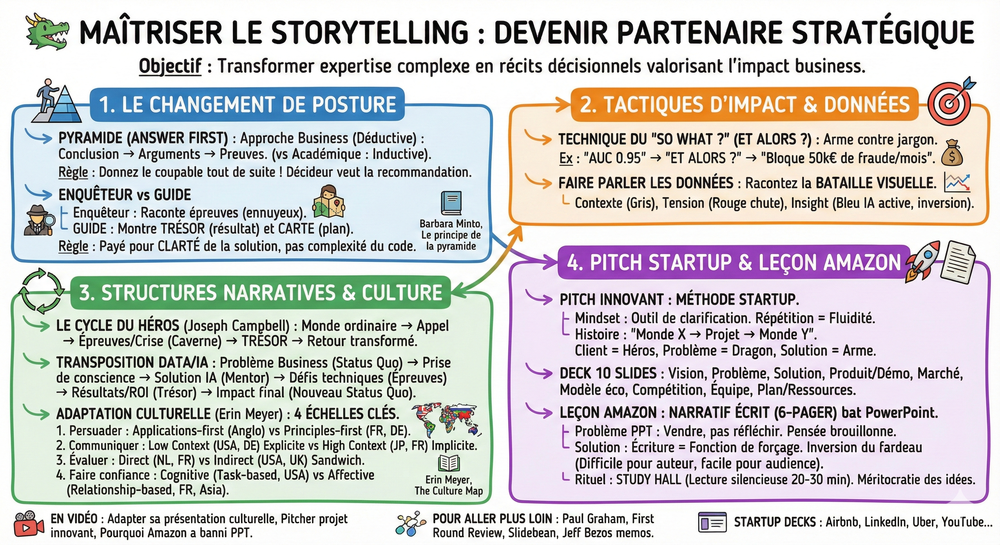
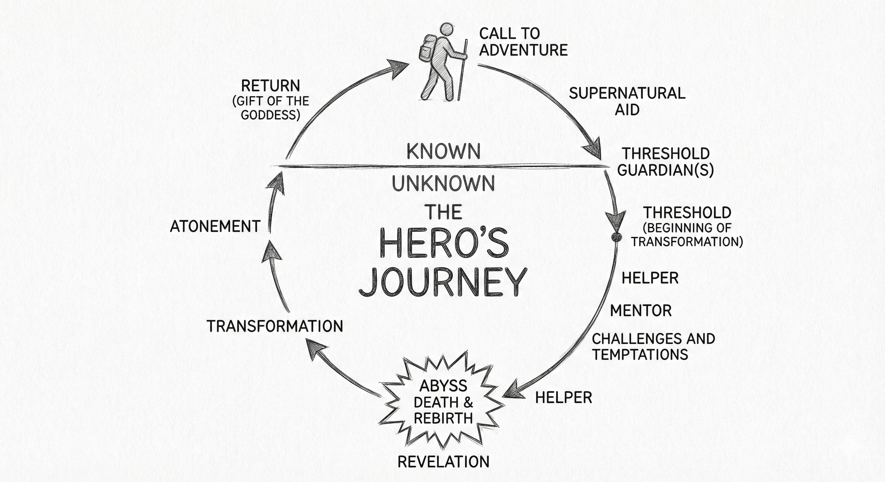

🐲 Maîtriser le storytelling¶


Objectif¶
Élever votre posture pour devenir un partenaire stratégique influent, capable de transformer une expertise technique complexe en récits décisionnels qui valorisent l'impact business.
Le changement de posture
Le principe de la pyramide (answer first)
C'est le concept le plus contre-intuitif pour un profil scientifique (théorisé par Minto/McKinsey).
- L'approche académique (inductive) : Données → Méthode → Tests → Conclusion.
- L'approche business (déductive) : Conclusion → Arguments → Preuves.
- La règle : Ne racontez pas l'enquête, donnez le nom du coupable tout de suite. Un décideur veut la recommandation dès la première minute.
Enquêteur vs guide
- L'enquêteur (vous) : Raconte ses épreuves techniques (nettoyage de données, bugs). C'est ennuyeux.
- Le guide (le stratège) : Montre le trésor (le résultat) et la carte pour sortir du temple (le plan d'action).
- La règle : On ne vous paie pas pour la complexité de votre code, mais pour la clarté de votre solution.
Livre
Barbara Minto, Le principe de la pyramide
Tactiques d'impact
La technique du "so what ?" (et alors ?)
L'arme absolue contre le jargon.
- Vous : "Le modèle a une AUC de 0.95."
- Consultant : Et alors ?
- Vous : "Il ne se trompe qu'une fois sur 20." → "Il va bloquer 50k€ de fraude par mois."
Mettez uniquement la dernière phrase (l'impact business) sur la slide.
Faire parler les données
Ne dites jamais "Voici les chiffres". Racontez la bataille visuelle.
- Contexte : "Regardez la barre grise (le passé)..."
- Tension : "Voyez la chute brutale en rouge (le problème)..."
Insight : "Mais ce point bleu, c'est le moment où l'IA s'active. La tendance s'inverse."
La structure mythique : Le voyage du héros
D'après Joseph Campbell et Matthew Winkler. Une structure universelle pour améliorer votre narration. What makes a hero? - Matthew Winkler
Le cycle du héros
Le voyage est un cycle qui commence dans le monde ordinaire, passe par un monde spécial (l'inconnu/la crise) et ramène le héros transformé chez lui.
- Le concept : "C'est dans la caverne où vous craignez d'entrer que se trouve le trésor que vous cherchez."
- La dynamique : status Quo → appel à l'aventure → épreuves/crise → trésor → retour (nouvelle vie).
Le cycle du héros : Monde ordinaire → Appel à l'aventure → Passage du seuil → Épreuves et alliés → Crise majeure → Trésor/révélation → Retour transformé. C'est la structure narrative universelle qu'on retrouve dans tous les grands récits, de l'Odyssée à Star Wars.
La transposition pour un projet data/IA
Utilisez cette structure pour métaphoriser votre présentation technique :
- Monde ordinaire : Le problème business tel qu'il existe aujourd'hui (status quo).
- Appel à l'aventure : La prise de conscience (ce problème nous coûte cher / une opportunité existe).
- Le mentor (L'assistance) : Votre solution (le modèle, le projet) qui apporte la sagesse.
- Les épreuves : Vos défis techniques (nettoyage des données, data leakage évité, entraînement).
- Le trésor : Les résultats (accuracy de 91%, ROI identifié).
- Le retour transformé : L'impact final sur l'entreprise (le nouveau Status Quo amélioré grâce au projet).
L'adaptation culturelle
D'après Erin Meyer, The Culture Map. On ne convainc pas un américain comme on convainc un français. Il faut analyser 4 échelles clés.
1. Persuader (la structure de l'argument)
- Applications-first (anglo-saxons) : Raisonnement inductif. Commencez par la conclusion (answer first). La théorie ne vient qu'en annexe si nécessaire.
- Principles-first (France, Allemagne, Russie) : Raisonnement déductif. Vous devez d'abord poser le cadre théorique et la méthodologie (le pourquoi) pour que la conclusion soit acceptée.
2. Communiquer (le contexte)
- Low context (USA, Pays-Bas, Allemagne) : Explicite. "Ce qui est dit est dit". Soyez précis, répétez, faites des récaps écrits (bullet points clairs).
- High context (Japon, Chine, France) : Implicite. Il faut lire entre les lignes. Le message passe par le sous-entendu et la relation.
3. Évaluer (le feedback)
- Direct (Pays-Bas, Russie, France) : La critique est franche. Le débat est un signe d'intérêt.
- Indirect (USA, UK, Japon) : La critique est enrobée (technique du sandwich). Il faut décoder la suggestion douce ("Maybe consider...") comme un ordre de changement.
4. Faire confiance
- Cognitive (task-based) : La confiance vient de la compétence et des résultats (USA).
- Affective (relationship-based) : La confiance se bâtit autour d'un café ou d'un déjeuner (France, Amérique Latine, Asie).
En vidéo : Adapter sa présentation aux différences culturelles
Livre : Erin Meyer, The Culture Map — guide pratique pour comprendre les différences culturelles en communication
Pitcher son projet innovant : La méthode Startup
Pour rendre la valeur de votre travail visible et obtenir les ressources nécessaires.
Préparation et mindset
Le pitch est avant tout un outil de clarification (une fonction de forçage). Si vous ne pouvez pas l'expliquer simplement, la pensée n'est pas claire.
- Investisseur vs Exécutif :
- Investisseur : Cherche le ROI potentiel et l'exit.
- Exécutif (projet interne) : Cherche la valeur business, l'alignement stratégique et le coût d'opportunité.
Une histoire convaincante (logos, ethos, pathos)
Un bon pitch n'est pas une liste de faits.
- La formule de la révolution : "Le monde est X, et grâce à notre projet, le monde sera Y."
- Le casting : Le client est le héros, le problème est le dragon, votre solution est l'arme, vous êtes le mentor.
La structure du deck (10 slides clés)
- Vision/titre : Le fil conducteur (slogan accrocheur).
- Problème : La douleur du client (besoin non satisfait).
- Solution : Simple et concis.
- Produit/démo : Montrez plutôt que de raconter (screenshot/vidéo).
- Marché : Qui est le client interne ? Quel département ?
- Modèle économique : Comment crée-t-on de la valeur ? (ROI des prédictions).
- Compétition : Avantage stratégique, pourquoi nous ?
- Équipe : Pourquoi êtes-vous la bonne équipe (crédibilité).
- Plan/ressources : Prochaines étapes et besoins (argent, temps).
La clé du succès : la répétition
La fluidité n'est pas naturelle, elle est travaillée. Répétez jusqu'à ce que les mots s'effacent pour laisser place à l'histoire. Anticipez les 3 questions pièges.
En vidéo : Pitcher un projet innovant : La méthode startup
Pitch decks de startups réelles
Airbnb, 2009, Seed, 0.6M
Alan, 2017, Series A, 23M
Buffer, 2011, Seed, 0.5M
Canvas, 2014, Series D, 9M
LinkedIn, 2004, Series B, 10M
Mixpanel, 2014, Series B, 65M
Pendo, 2016, Series B, 20M
The Family, 2013, Seed
Uber, 2008, Seed, 0.2M
YouTube, 2005, Series A, 3.5M
Ressources pitch :
- Paul Graham, How to Convince Investors — essai fondateur sur la persuasion face aux investisseurs
- Kevin Hale, How to Design a Better Pitch Deck — conférence YC sur la structure d'un pitch deck
- First Round Review, Storytelling Tips for Fundraising — conseils narratifs pour rendre un pitch mémorable
- Slidebean, How to Write a Killer Startup Pitch Deck? — vidéo pas à pas sur la construction d'un pitch deck
- Slidebean, Templates for Startups — modèles de pitch deck prêts à l'emploi
La leçon d'Amazon : Pourquoi le narratif bat le PowerPoint
Passer de la persuasion à la recherche de vérité.
Le problème avec PowerPoint
PowerPoint est conçu pour vendre, pas pour réfléchir.
- Pensée brouillonne : Les listes à puces masquent les failles logiques.
- Prime au charisme : Une mauvaise idée bien présentée peut gagner face à une bonne idée mal présentée.
- Fardeau mal placé : C'est facile pour l'auteur (pas besoin de connecter les idées), mais difficile pour l'audience (qui doit déchiffrer).
La solution : Le narratif écrit (6-Pager)
On remplace les slides par un mémo de 6 pages. L'écriture est une fonction de forçage qui oblige à clarifier la pensée.
- Structure type : Introduction (pourquoi) → Objectifs → Principes → État des lieux → Leçons apprises → Plan d'action.
- Inversion du fardeau : C'est difficile pour l'auteur (semaines de rédaction), mais facile pour l'audience (densité et clarté).
Le rituel : study hall (lecture silencieuse)
La réunion commence par 20 à 30 minutes de silence pour lire le mémo.
- Contexte partagé : Tout le monde a la même information au même moment.
- Nivellement : Le terrain de jeu est égalisé entre juniors et séniors.
- Le débat : La discussion porte sur le fond (vérité), pas sur la clarification.
Avantages vs inconvénients
- Avantage : Méritocratie des idées et mémoire institutionnelle.
- Inconvénient (la taxe narrative) : Cela demande beaucoup de temps (time-to-market ralenti) et crée un stress pour les auteurs.
En vidéo : Pourquoi Amazon a banni PowerPoint : La leçon du narratif écrit
Ressources Amazon :
- Sachin Rekhi, The Power of Amazon's Written Narratives — analyse de la culture du mémo chez Amazon
- Amazon, An Insider Look at Amazon's Culture and Processes — vision interne des processus Amazon
- Amazon, Startup Advice: How to Write a Narrative — guide pratique pour rédiger un mémo narratif
- Jeff Bezos on Writing Memos at Amazon — Jeff Bezos explique la philosophie du mémo
- Marty Cagan, Coaching Tools - The Narrative — comment utiliser le narratif comme outil de coaching produit
- Forbes, Why Amazon's Culture Isn't Right For Your Business — les limites de la culture narrative d'Amazon
Ce qu'il faut retenir¶
- En business, donnez la conclusion d'abord (answer first) : ne racontez pas l'enquête, donnez le nom du coupable.
- Appliquez le test du "so what ?" à chaque chiffre : transformez le jargon technique en impact business concret.
- Adaptez votre style de persuasion à la culture de votre audience (applications-first vs principles-first).
- Le voyage du héros est une structure narrative universelle que vous pouvez transposer à n'importe quel projet data.
Pour aller plus loin¶
- Barbara Minto, Le principe de la pyramide — le livre fondateur sur la communication structurée en consulting
- Erin Meyer, The Culture Map — guide pratique pour adapter sa communication aux différences culturelles
- What makes a hero? - Matthew Winkler (TED-Ed) — vidéo sur la structure universelle du voyage du héros